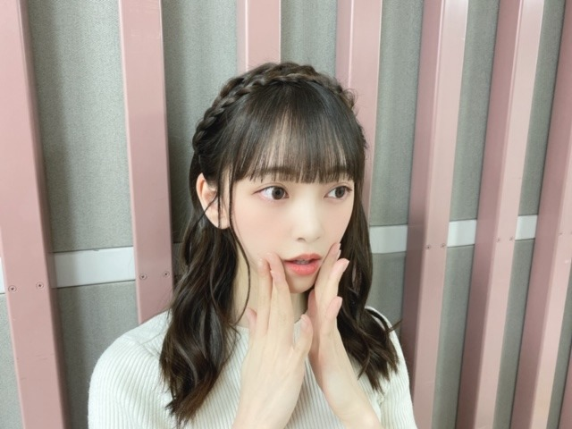

2020/0327Friかくれんぼには強いです
髪色抜けてきたので
そろそろ新しい色にしたいなーと思っています
迷うなぁ迷うなぁ


編み込みカチューシャヘア
気に入りました~
またしたいな~
The Vampsさん熱が最近また増して
よく聴いています
いい歌、いい声、いいMV!
最高です
ややハスキーで優しい歌声が
夕方とか朝は特に癒されますね☺︎


実は数年前から世界中の紅茶を集めていて
パリ、ニース、上海、ニューカレドニア、カリフォルニア、タイ、シンガポール、台湾の紅茶の茶葉がいまは集まっています。
他の国も気になるなぁ。

♡お知らせ♡
5/27発売
堀未央奈 2nd写真集の御予約はこちらから↓
■楽天ブックス①（楽天ブックス限定独占メイキング動画+ポストカード1種）
http://books.rakuten.co.jp/rb/16275200/
■楽天ブックス②（楽天ブックス限定アザーカバー＋ポストカード1種）
http://books.rakuten.co.jp/rb/16275199/
※上記ポストカードの絵柄は①②ともに同一のものとなります。
■セブンネットショッピング（セブンネット限定アザーカバー＋折り目ありB2サイズポスター1枚）
https://7net.omni7.jp/detail/1107083082
■HMV（HMV・loppi限定アザーカバー＋ポストカード1種）
https://www.hmv.co.jp/product/detail/10785595
■タワーレコード（クリアポストカード1種）
http://tower.jp/item/5038617
■乃木坂46 オフィシャルモバイルサイト（クリアファイル1種）
http://sp.nogizaka46.com/q?i=ec/11/lp_xjbe&m=official_wanibooks
※いずれも数に限りがありますので、無くなり次第終了となります。
■Amazon（特典なし）
https://www.amazon.co.jp/dp/4847082931
下記書店チェーンで購入すると、書店毎で別絵柄のポストカード特典が付きます。
(※特別付録の全8種ランダムのポストカードとは別特典となります）
■紀伊國屋書店（紀伊國屋書店限定ポストカード1種）
https://www.kinokuniya.co.jp/c/20200325000000.html
■TSUTAYA（TSUTAYA限定ポストカード1種）
https://tsutaya.tsite.jp/news/book01/i/41573605/
■丸善ジュンク堂書店（丸善ジュンク堂書店限定ポストカード1種）
https://honto.jp/store/news/detail_041000043498.html
■未来屋書店（未来屋書店限定ポストカード1種）
https://www.miraiyashoten.co.jp/news/hori_miona_2nd/
■くまざわ書店（くまざわ書店限定ポストカード1種）
https://www.kumabook.com/comic_tokuten/8022/
■コーチャンフォー（コーチャンフォー限定ポストカード1種）
https://www.coachandfour.ne.jp/original/
先着特典がいっぱいだぁー!
私らしさが詰まった1冊になっていますので是非✨
でははは
2020/03/27 20:18
コメント(293)
編み込みカチューシャも本当かわいい！
どんな髪型も似合うってすごい！
今日もHMVで限定カバーの写真集、予約してきたよ！
セブンネット、楽天も限定カバーを予約済みです！
あとはどこで買おうかなぁ
特典も全部ほしくなっちゃうぜ！
どんな髪型も似合うってすごい！
今日もHMVで限定カバーの写真集、予約してきたよ！
セブンネット、楽天も限定カバーを予約済みです！
あとはどこで買おうかなぁ
特典も全部ほしくなっちゃうぜ！
ブログ更新ありがとう！
写真集絶対買うで！！
写真集絶対買うで！！
ブログ更新ありがとう!
髪型めっちゃ可愛い♡♡
premium music良かったよ〜
未央奈可愛かった!
写真集発売楽しみ〜
これからも体調に気をつけて頑張ってね!
大好きだよ〜♡♡
髪型めっちゃ可愛い♡♡
premium music良かったよ〜
未央奈可愛かった!
写真集発売楽しみ〜
これからも体調に気をつけて頑張ってね!
大好きだよ〜♡♡
かくれんぼやるー❤️
ブログ更新ありがとう！
編み込みカチューシャヘアもこの前の音楽番組の髪型も可愛くて好きです！
写真集楽しみ〜
最近、東京でコロナ感染者が増えてきてるから気をつけてね！
編み込みカチューシャヘアもこの前の音楽番組の髪型も可愛くて好きです！
写真集楽しみ〜
最近、東京でコロナ感染者が増えてきてるから気をつけてね！
堀ちゃん、ブログ更新ありがとうございました
堀ちゃん写真集、コンプリートします！
堀ちゃんがファン大切に思ってくれる
気持ちに少しでも応えたいから！
堀ちゃん、いつも優しさをありがとう〜
大好きだよー
堀ちゃん写真集、コンプリートします！
堀ちゃんがファン大切に思ってくれる
気持ちに少しでも応えたいから！
堀ちゃん、いつも優しさをありがとう〜
大好きだよー
写真集絶対買います。一日早いけどお互いおめでとうございます
編み込みカチューシャすんごいかわいい！！またやってほしい
写真集予約したよ〜
今の髪型めっちゃ好き！
これからも応援します！
今の髪型めっちゃ好き！
これからも応援します！
ブログ更新ありがとう‼️魔女の宅急便やってるよー笑笑
てっきり、かくれんぼのエピソード話すのかと、、、
写真集買うかー

写真集買うかー
堀ちゃん、ブログ更新ありがとう！
僕も個人的に堀ちゃんのカチューシャ姿が好きなので、編み込みカチューシャヘアーも大好き！
写真集絶対買うよ！発売日が待ちきれないよ〜！
最後のレコメンも聞いたよ！3年間お疲れ様でした！
堀ちゃん、大好き！
僕も個人的に堀ちゃんのカチューシャ姿が好きなので、編み込みカチューシャヘアーも大好き！
写真集絶対買うよ！発売日が待ちきれないよ〜！
最後のレコメンも聞いたよ！3年間お疲れ様でした！
堀ちゃん、大好き！
堀未央奈❤こんばんは❗編み込みカチュシャ似合ってて可愛いよ(*^O^*)俺も好きかな(*^O^*)今東京は、コロナ感染している人沢山居るよね。未央奈は、大丈夫？気を付けてね。こないだ俺は、長野県上田TSUTAYAで未央奈の写真集予約したからね(^_^)v髪の色変えるの？俺は、今の髪の色が好きだよ(^-^)vこれからも体調には気を付けて頑張ってね(*^_^*)毎日可愛いね(*^_^*)未央奈❤愛してる ♥❤
その髪型めっちゃ似合っとるし可愛い！！
今録画したアメトーーク見てるよー笑
相変わらず爪痕残してる笑
写真集全部買うよー楽しみにしてるね！！！
今録画したアメトーーク見てるよー笑
相変わらず爪痕残してる笑
写真集全部買うよー楽しみにしてるね！！！
未央奈さんこんばんは♪
編み込みカチューシャ可愛い(*^^*)
色んな紅茶飲んでみたいな
明日も未央奈さんにHAPPYを
お休みなさい(^-^ゞ
編み込みカチューシャ可愛い(*^^*)
色んな紅茶飲んでみたいな
明日も未央奈さんにHAPPYを
お休みなさい(^-^ゞ
こんばんはー(^o^)プログ更新、相変わらず早いですね( ☆∀☆)‼
紅茶に使うお水は軟水ですか？ヨーロッパの紅茶は硬水で入れると美味しくなると聞きました。(^o^)v フランスの茶葉ならエビアンで入れてみては如何でしょうか⁉
東京は大変な事になってますが、今を乗りきって大事にして下さいね‼
静岡はまだ自由なところがありますが、なるべく家で過ごしています。
堀ちゃんのレコメンを繰り返し聴いたりしているから、楽しく笑っています。
堀ちゃんにはいつも元気をもらっています‼(’-’*)♪ ありがとうございます‼
紅茶に使うお水は軟水ですか？ヨーロッパの紅茶は硬水で入れると美味しくなると聞きました。(^o^)v フランスの茶葉ならエビアンで入れてみては如何でしょうか⁉
東京は大変な事になってますが、今を乗りきって大事にして下さいね‼
静岡はまだ自由なところがありますが、なるべく家で過ごしています。
堀ちゃんのレコメンを繰り返し聴いたりしているから、楽しく笑っています。
堀ちゃんにはいつも元気をもらっています‼(’-’*)♪ ありがとうございます‼
未央奈さんブログ更新ありがとうございます。堀未央奈写真集予約したよ。セブンネットショッピングで予約したよ。未央奈さんと(*^o^)／＼(^-^*)になりたい。堀未央奈が乃木坂46で１番可愛い❤️な。ざきちゃんも可愛い❤️ですね。２期生は皆仲が良いの？
3月28日で2期生結成7周年なんだね。めでたいねー
新しい髪型。お花の王冠みたいでかわいい
新しい髪型。お花の王冠みたいでかわいい
未央奈ブログ更新ありがとう！
衣装とっても可愛くて似合ってるよ！
編み込みカチューシャヘア可愛くて好き！
紅茶か〜！
お洒落だね！(^^)
僕も紅茶好きなので今度未央奈のおすすめの紅茶教えてね！
2nd写真集予約したよーー！
沢山特典もあってめっちゃいいね！
届くの楽しみだな〜！
全握延期になっちゃったけどお互い体調に気をつけて
頑張ろうね！
次のブログも楽しみに待ってるね！
衣装とっても可愛くて似合ってるよ！
編み込みカチューシャヘア可愛くて好き！
紅茶か〜！
お洒落だね！(^^)
僕も紅茶好きなので今度未央奈のおすすめの紅茶教えてね！
2nd写真集予約したよーー！
沢山特典もあってめっちゃいいね！
届くの楽しみだな〜！
全握延期になっちゃったけどお互い体調に気をつけて
頑張ろうね！
次のブログも楽しみに待ってるね！
みおなー
写真集絶対買うよー
体調に気をつけてね！
質問
○ヘアケアとかってどうしてる？
○おすすめのシャンプーとかある？
○好きな服のブランドは？
写真集絶対買うよー
体調に気をつけてね！
質問
○ヘアケアとかってどうしてる？
○おすすめのシャンプーとかある？
○好きな服のブランドは？
俺も今日眠かったー
明日は1日だね休みなのでアナスターシャでも聴いてゆっくりします。どう森もしなきゃ笑
あみこみカチューシャかわいい！似合ってるね！
写真集買うねー。みるの楽しみ！
ではは
明日は1日だね休みなのでアナスターシャでも聴いてゆっくりします。どう森もしなきゃ笑
あみこみカチューシャかわいい！似合ってるね！
写真集買うねー。みるの楽しみ！
ではは
こんばんは。
編み込みカチューシャヘア似合って可愛いですね。
写真集買います。
編み込みカチューシャヘア似合って可愛いですね。
写真集買います。
未央奈ちゃん、お疲れ様です。
編み込みカチューシャヘアかわいい
写真集買います!!楽しみ。
乃木坂のシングルTYPE.B買いました。
編み込みカチューシャヘアかわいい
写真集買います!!楽しみ。
乃木坂のシングルTYPE.B買いました。
未央奈更新ありがとう！
編み込みカチューシャヘアめっちゃ可愛いです！
最近歌番組などで色んな髪型見れるから嬉しいです！
写真集絶対買います！
身体に気をつけてね。
編み込みカチューシャヘアめっちゃ可愛いです！
最近歌番組などで色んな髪型見れるから嬉しいです！
写真集絶対買います！
身体に気をつけてね。
チャァオ～～!☆彡
わぁああぁ⤴️⤴️⤴️
すごい❕❤️❤️❤️❤️❤️笑顔
プリンセスみおちゃん、可愛いぃ～～⤴️⤴️です✴️✴️❕❤️❤️❤️❤️❤️笑顔
更に前髪がとても綺麗に揃っていて、
めちゃめちゃ可愛いぃ～～⤴️⤴️ですよぉ～～⤴️⤴️❕❤️❤️❤️❤️❤️笑顔
おいら、その可愛いぃ～～編み込みカチューシャヘア～～～に
目がないので、とっても嬉しい～～⤴️⤴️です❕❤️❤️❤️❤️❤️笑顔✴️✴️✴️✴️✴️
まさに、プリンセスですねぇ❕❤️❤️❤️❤️❤️笑顔
みおちゃん❕笑顔・・・
この最初写メの衣装がめちゃめちゃ大好きなんです❕❤️❤️❤️❤️❤️笑顔
ヤバいほど大好きなんです❕❤️❤️❤️❤️❤️笑顔
上品な折り目を入れた白地の衣装がお洒落感があって素敵です❕❤️❤️❤️❤️❤️笑顔
本当に本当に、大好きなんです❕❤️❤️❤️❤️❤️笑顔
この衣装をデザインした方に～～～
お中元を贈りたいくらい大好きなんです❕❤️❤️❤️❤️❤️笑顔
見ているだけで、幸せな衣装です❕❤️❤️❤️❤️❤️笑顔
・・❕笑顔
みおちゃんの髪色で思い出しました～～⤴️⤴️❕笑顔
おいら、そう言えば～ギルサンダーぐらい髪が伸びています❕笑
いや、今・・番組で七つの大罪をやっているので気がつきました❕笑
このまま伸びていくと～～⤴️⤴️
黒髪のゴウゼル君になります❕笑
それでは、みおちゃん❕笑顔・・・
素敵な写メありがとうございました❕❤️❤️❤️❤️❤️笑顔
お仕事楽しく頑張ってねぇ～～～⤴️⤴️❕❤️❤️❤️❤️❤️笑顔
またねぇ❕❤️❤️❤️
(σ≧▽≦)σ❤️❤️❤️
❇️おすまし！より⚜️❇️彡
堀ちゃんこんばんは。静岡の高校二年生、なかじーです！
今日の静岡は雨でした。東京は明日から雨ですかね？最近色々あるので体は大事にしてくださいね！
世界中の紅茶いいですね!!僕も紅茶好きでよく飲みます。（コーヒーは前に飲んだらお腹を壊してそれ以来飲めません…笑）
今まで飲んだのだとどこの国のが1番美味しかったですか？教えてくれると嬉しいです！
最近やっと暖かくなってきましたね（静岡だけ？）春は花粉症がなければ過ごしやすいので好きです。
また書きますね。ではでは。
今日の静岡は雨でした。東京は明日から雨ですかね？最近色々あるので体は大事にしてくださいね！
世界中の紅茶いいですね!!僕も紅茶好きでよく飲みます。（コーヒーは前に飲んだらお腹を壊してそれ以来飲めません…笑）
今まで飲んだのだとどこの国のが1番美味しかったですか？教えてくれると嬉しいです！
最近やっと暖かくなってきましたね（静岡だけ？）春は花粉症がなければ過ごしやすいので好きです。
また書きますね。ではでは。
未央奈！！
ブログ更新ありがとう
写真集の特典たくさんだね ✨
載せてた写真全部可愛くてお気に入り
髪型もめっちゃ似合ってる！
写真集ぜっっったい買うね！
もしあるとしたら握手会もぜっっったい行くね〜！！
これからもずっと応援してるね
ブログ更新ありがとう
写真集の特典たくさんだね ✨
載せてた写真全部可愛くてお気に入り
髪型もめっちゃ似合ってる！
写真集ぜっっったい買うね！
もしあるとしたら握手会もぜっっったい行くね〜！！
これからもずっと応援してるね
ブログ更新ありがとう〜
握手会楽しみ〜
握手会楽しみ〜
こんばんは
未央奈は髪染めなくて黒でもどんな髪型でもめっちゃ可愛いよ
僕は紅茶好きだから何か紅茶分けて譲ってほしいな
未央奈大好き
未央奈は髪染めなくて黒でもどんな髪型でもめっちゃ可愛いよ
僕は紅茶好きだから何か紅茶分けて譲ってほしいな
未央奈大好き
ブログ更新ありがとうーーー
編み込みカチューシャヘアもやっぱ似合うなーーーー
可愛いのは当たり前すぎるわーー
THE VAMPS聞いてみるーーー
茶葉とか全然分からんけどちょっと気になるなーー
写真集は絶対買うーー
体調には気をつけてなーー
ずっと応援しとるよーー
編み込みカチューシャヘアもやっぱ似合うなーーーー
可愛いのは当たり前すぎるわーー
THE VAMPS聞いてみるーーー
茶葉とか全然分からんけどちょっと気になるなーー
写真集は絶対買うーー
体調には気をつけてなーー
ずっと応援しとるよーー
ブログ更新ありがとう。
写真集今から楽しみ
写真集今から楽しみ
お疲れ様。今日かわいいね

未央奈ブログ更新ありがと〜！！
写真集絶対買う！1冊だけじゃないよ！！！
買わせてください！！
未央奈の写真集買うの楽しみ！！！
これからも応援してます！！！
写真集絶対買う！1冊だけじゃないよ！！！
買わせてください！！
未央奈の写真集買うの楽しみ！！！
これからも応援してます！！！
かわいいー
ブログ更新ありがとうございます！！
レコメンmcお疲れ様でした！！ほんとに聴いてて楽しかった。今度お礼いいに伺いますね！！あぁ、でも握手会あるかわかりませんよね……信じます！！(笑)
お紅茶いいですよね。コーヒーの次に好きです(笑)
あの香りが……
レコメンmcお疲れ様でした！！ほんとに聴いてて楽しかった。今度お礼いいに伺いますね！！あぁ、でも握手会あるかわかりませんよね……信じます！！(笑)
お紅茶いいですよね。コーヒーの次に好きです(笑)
あの香りが……
[かくれんぼには強いです]ありがとー❗️
今の未央奈の髪型、髪色すごく好きです❗️
編み込みカチューシャ、初めて見聞きしました。
似合ってます。新しい自分を見つけるのって大事ですよね❗️
そして、「レコメン！」お疲れ様でした❗️
未央奈とノリさんの深夜テンションの会話聴いてると
自分までテンション上がって眠れなくなる時がありました。
未央奈は人を楽しませたり癒したりする力があると思います❗️
今までほんとうにお疲れ様でした❗️
ぜひゲスト出演を❗️期待❗️
乃木坂工事中良かったです。何にでも全力プレー、
いいことだと思います。ツインテール可愛かったです。
「premium music2020」インフルエンサー最高でした。
次回のブログと写真集楽しみです❗️
今の未央奈の髪型、髪色すごく好きです❗️
編み込みカチューシャ、初めて見聞きしました。
似合ってます。新しい自分を見つけるのって大事ですよね❗️
そして、「レコメン！」お疲れ様でした❗️
未央奈とノリさんの深夜テンションの会話聴いてると
自分までテンション上がって眠れなくなる時がありました。
未央奈は人を楽しませたり癒したりする力があると思います❗️
今までほんとうにお疲れ様でした❗️
ぜひゲスト出演を❗️期待❗️
乃木坂工事中良かったです。何にでも全力プレー、
いいことだと思います。ツインテール可愛かったです。
「premium music2020」インフルエンサー最高でした。
次回のブログと写真集楽しみです❗️
ブログ更新ありがとうございます！
可愛いです///
写真集楽しみにしてます！
コロナが流行ってるので体調に気をつけて頑張ってください！
可愛いです///
写真集楽しみにしてます！
コロナが流行ってるので体調に気をつけて頑張ってください！
ブログありがとう！髪色はミルクティー色とかみてみたいなぁ！何色でも好きだけど！！写真集もう予約したよ！！限定カバーやメイキング動画やら本当に楽しみだぁ！！
それから、レコメン本当にお疲れ様！
のぎののでMCをやって、レコメンに抜擢されたのは本当に嬉しくて、毎週本当に楽しみにしていました！女心ではサバサバした意見で本音を語ってくれるのが嬉しかったし、自分の送ったメールにコメントくれたり、今となれば、それがどんなにありがたいことなのか、幸せなことだったのか身に染みて感じます。のりさんとの掛け合いが大好きで、1番好きなコンビです！！いつかゲストで呼ばれたときには絶対読まれるように頑張る！そして最終回では直接伝えられなかったけど、堀ちゃんのレコメン！が大大大好きです！！声も可愛いし、言葉選びも笑い声もツッコミをいれるのも好き！最終回が終わったあといっぱい泣いちゃったけど、755やブログやインスタを更新してくれるから、今はそれを見れるだけで幸せです！早く握手会で会いたいなぁ。堀ちゃんが大好きです！
ももんが
それから、レコメン本当にお疲れ様！
のぎののでMCをやって、レコメンに抜擢されたのは本当に嬉しくて、毎週本当に楽しみにしていました！女心ではサバサバした意見で本音を語ってくれるのが嬉しかったし、自分の送ったメールにコメントくれたり、今となれば、それがどんなにありがたいことなのか、幸せなことだったのか身に染みて感じます。のりさんとの掛け合いが大好きで、1番好きなコンビです！！いつかゲストで呼ばれたときには絶対読まれるように頑張る！そして最終回では直接伝えられなかったけど、堀ちゃんのレコメン！が大大大好きです！！声も可愛いし、言葉選びも笑い声もツッコミをいれるのも好き！最終回が終わったあといっぱい泣いちゃったけど、755やブログやインスタを更新してくれるから、今はそれを見れるだけで幸せです！早く握手会で会いたいなぁ。堀ちゃんが大好きです！
ももんが
こんばんわです！
髪型特集みたいなの連載化できるね！
バリエーション豊富だし、どれも毎回似合ってて可愛いし。
ハーフアップ未央奈はやっぱり強いなー
俺の中ではベスト3に入るね☆
紅茶そんなに集めてるんだ！！すごいね！
前から紅茶好きだから、めっちゃ興味合って気になる！
紅茶といえばイギリスのイメージだったけど、いろいろな国のがあるんだね！
ちょっと調べたら生産量１番はインドなんだって！
チャイとか関係してくるのかな？
でも、ヨーロッパ方面じゃなくて意外だよね！知ってた？
ちなみに冷蔵庫にはミルクティーを常にストックしておきたい人間ですw
かくれんぼは見つける側がいいー。
ブログ更新ありがとー毎回楽しみ化しておりますです。
でわわわ。(゜ー゜)(。_。)
髪型特集みたいなの連載化できるね！
バリエーション豊富だし、どれも毎回似合ってて可愛いし。
ハーフアップ未央奈はやっぱり強いなー
俺の中ではベスト3に入るね☆
紅茶そんなに集めてるんだ！！すごいね！
前から紅茶好きだから、めっちゃ興味合って気になる！
紅茶といえばイギリスのイメージだったけど、いろいろな国のがあるんだね！
ちょっと調べたら生産量１番はインドなんだって！
チャイとか関係してくるのかな？
でも、ヨーロッパ方面じゃなくて意外だよね！知ってた？
ちなみに冷蔵庫にはミルクティーを常にストックしておきたい人間ですw
かくれんぼは見つける側がいいー。
ブログ更新ありがとー毎回楽しみ化しておりますです。
でわわわ。(゜ー゜)(。_。)
更新ありがとう。
未央奈ちゃんとかくれんぼした～い。
さがす方でも隠れる方でも楽しそう～
髪型カチューシャヘアーかわいい～
髪の色明るい色が似合うと思うよ。
まぁ未央奈ちゃんだったら何でもかわいい～かも
体調に気をつけてね
未央奈ちゃんとかくれんぼした～い。
さがす方でも隠れる方でも楽しそう～
髪型カチューシャヘアーかわいい～
髪の色明るい色が似合うと思うよ。
まぁ未央奈ちゃんだったら何でもかわいい～かも
体調に気をつけてね
今日もお疲れ様
髪型めっちゃ似合ってる
握手会で会えるの楽しみにしてます
髪型めっちゃ似合ってる
握手会で会えるの楽しみにしてます
未央奈ちゃんこんばんは‼ありがとうございます！頑張ります‼お疲れ様です。楽しみにしてます‼頑張ります‼すみません、すいません。
ブログ更新ありがとう！
写真集予約しました〜！！限定表紙のやつです！どんな表紙か分からないけど未央奈がかわいいくて綺麗なのは100％変わらないのでOKです！笑
なんと偶然にもわたしも紅茶にハマってます！！わたしはシンガポールの紅茶が好きです〜！！イギリスは種類が多いので全部集めたいとも思ってます！
この前の音楽番組いっぱい未央奈写ってて嬉しかったし髪型もとても可愛かったです！！髪色アッシュグレーやアッシュグレージュなどどうでしょうか？？似合うと思います！あとカーキアッシュとか！
次のブログ更新も楽しみだし１日の最後に未央奈を見れて幸せです！今週もお疲れ様でした！
写真集予約しました〜！！限定表紙のやつです！どんな表紙か分からないけど未央奈がかわいいくて綺麗なのは100％変わらないのでOKです！笑
なんと偶然にもわたしも紅茶にハマってます！！わたしはシンガポールの紅茶が好きです〜！！イギリスは種類が多いので全部集めたいとも思ってます！
この前の音楽番組いっぱい未央奈写ってて嬉しかったし髪型もとても可愛かったです！！髪色アッシュグレーやアッシュグレージュなどどうでしょうか？？似合うと思います！あとカーキアッシュとか！
次のブログ更新も楽しみだし１日の最後に未央奈を見れて幸せです！今週もお疲れ様でした！
未央奈ちゃん、ブログありがとう。髪色次はどんな色かたのしみー。編み込みの髪型わたし好きで、好感持てるし、清楚にみえます。写真集お知らせありがとう！
タイトル、何かの番組収録かな。
前、逃走中に出演してたもんなぁ。
レコメン、お疲れ様でした。
振り返れば、本当にいろんな愛称を付け
られてきましたね。
そんな中でのポコみおな。最後の最後迄
面白かったです。
ほんと、ロスみおな。
写真集、当然予約しました。
みおなちゃんもお姉さんメンバーになっ
てきたけど、今日のブログ写真みると
女の子らしい女の子。
前、逃走中に出演してたもんなぁ。
レコメン、お疲れ様でした。
振り返れば、本当にいろんな愛称を付け
られてきましたね。
そんな中でのポコみおな。最後の最後迄
面白かったです。
ほんと、ロスみおな。
写真集、当然予約しました。
みおなちゃんもお姉さんメンバーになっ
てきたけど、今日のブログ写真みると
女の子らしい女の子。
ブログ更新ありがとう！！！
未央奈の髪型実は毎回楽しみにしてます！笑
歌番組事に変わるからいつも違う未央奈が見れているので嬉しいです笑
写真集発売でちょー楽しみ！！
まじで待ってた！絶対買います！！昨年から楽しみにしてたので期待してもいいですか？
これからの情報解禁楽しみです。笑
体調には気をつけてね！
これからも応援してます
未央奈の髪型実は毎回楽しみにしてます！笑
歌番組事に変わるからいつも違う未央奈が見れているので嬉しいです笑
写真集発売でちょー楽しみ！！
まじで待ってた！絶対買います！！昨年から楽しみにしてたので期待してもいいですか？
これからの情報解禁楽しみです。笑
体調には気をつけてね！
これからも応援してます
みおな
2作目の写真集もいっぱいの人に見てもらえるといいねー
2作目の写真集もいっぱいの人に見てもらえるといいねー
未央奈ちゃんインスタ更新ありがとう！
編み込みカチューシャかわいすぎる！
ゆきも小学校卒業で袴着た時同じ髪型したからなんか嬉しくなっちゃいました笑
PremiumMusicかわいすぎました！直ぐに見つけてめがはなせなかったなぁ。ダンス素敵でした！
写真集欲しい特典ありすぎて大変、笑お金貯める！
編み込みカチューシャかわいすぎる！
ゆきも小学校卒業で袴着た時同じ髪型したからなんか嬉しくなっちゃいました笑
PremiumMusicかわいすぎました！直ぐに見つけてめがはなせなかったなぁ。ダンス素敵でした！
写真集欲しい特典ありすぎて大変、笑お金貯める！
ブ～ン、飛んできたよっ 
未央奈先生、写真集発売おめです。
世界中コロナの闇に包まれてますが
未央奈先生の写真集で明るくなるといいなっ
see you！ (^^)/
未央奈先生、写真集発売おめです。
世界中コロナの闇に包まれてますが
未央奈先生の写真集で明るくなるといいなっ
see you！ (^^)/


俺もその髪色にしたいからー笑